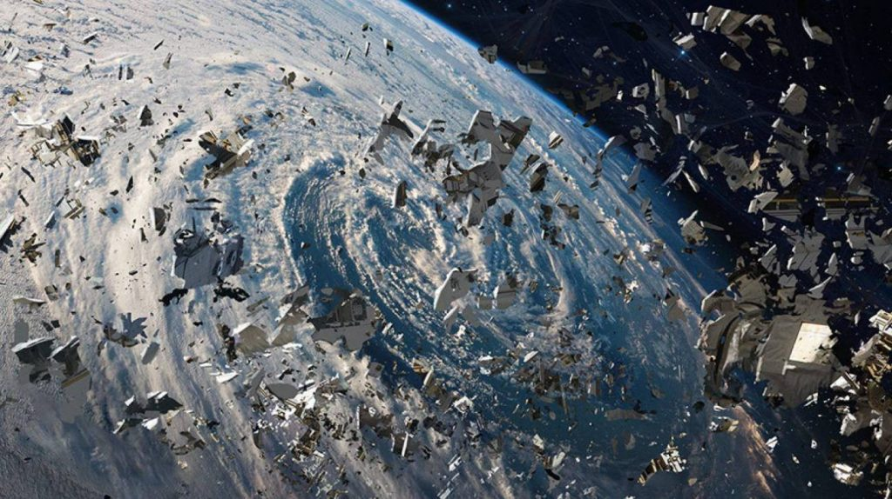
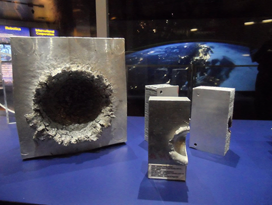
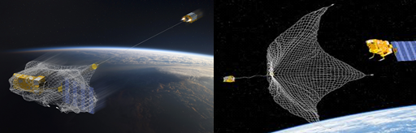

Космический мусор — это все созданные человеком объекты и их части в космосе, которые уже не приносят никакой пользы, однако являются опасными для космических аппаратов, спутников, МКС, космонавтов.
Среди такого мусора в космосе существуют довольно большие или те, которые несут в себе довольно страшные для жизни (ядерные, токсичные и т. п.) материалы. Такие объекты несут потенциальную опасность для нашей планеты. Например, если случайно сойдут со своей орбиты, или будет неполное сгорание при прохождении плотных слоев атмосферы Земли и попадании обломков на объекты жизнедеятельности людей.
Размер и количество их примерно подсчитаны, около 22 тысячи единиц диаметром 5-10 см, и больше полумиллиона 0.25-0.90 см.
К сожалению, не удалось избежать в космосе аварий, виновником которых выступил космический мусор. В иллюминаторе образовалась трещина от столкновения с мелким объектом, похожим на отслоившуюся часть краски или маленький металлический фрагмент размером всего несколько тысячных миллиметра.
Печально, что при столкновении космических объектов с мусором нередко образуется новый мусор (синдром Кесслера), что приводит к неподвластному контролю роста засорённости космоса.
МКС движется по орбите со скоростью 7,66 км/с (27600 км/ч), так что любой встречный предмет может привести к повреждениям. Сегодня уже учитывается возможность встречи с космическим мусором и иллюминаторы станции изготавливаются из многослойного кварцевого и боросиликатного стекла, чтобы в случае столкновения с мельчайшими фрагментами это никак не сказалось.
Однако фрагменты диаметром до 1 см уже довольно опасны, а любой фрагмент диаметром более 10 см может разнести на куски спутник или космический корабль. МКС уже приходилось маневрировать, чтобы уклониться от крупных и довольно опасных фрагментов космического мусора.
Так, в 2014 года орбиту космической станции перенесли практически на километр, чтобы не пересекаться с расчётной траекторией спускающегося фрагмента ступени, который принадлежал старой европейской ракете Ariane 5.
А вот 2021 год для мкс чуть не стал фатальным, когда на пути движения оказалось скопление фрагментов космического мусора. Ситуация оказалась внештатной, космонавты были подняты по тревоге для подготовки к эвакуации, но совместно с командным центром управления на земле провели расчеты и моделирование уклонения, а затем смогли успешно это воплотить.
Мусор усложняет научную работу проводимую на МКС и работу спутников, отвечающие за нашу современную жизнедеятельность (карты, связь, наблюдение за атмосферой, вулканами, движением тектонических плит и предупреждением о чрезвычайных ситуациях на планете Земля).
Также объекты космического мусора могут представлять прямую опасность и для жителей планеты — при их неконтролируемом сходе с орбиты, неполном сгорании при прохождении плотных слоев атмосферы Земли и выпадении обломков на населённые пункты, промышленные объекты, транспортные коммуникации.
Если в темную ночь в безоблачное небо посмотреть на звезды, можно заметить яркие вспышки. Большинство называют это звездопадом, в реальности же, это космический мусор входит в атмосферу и сгорает, вызвав такую реакцию.
Что касается проектов по удалению с орбиты уже накопившегося мусора, то большинство из них существуют, к сожалению, только на бумаге и не имеют финансирования для полноценных лётных испытаний.
Хотя в ряду других рассматривались, например, проекты спутников, испаряющих обломки мощным лазерным лучом или меняющих их орбиту ионными пучками, как проектируемый российский аппарат «Ликвидатор», который должен тормозить обломки для их входа в атмосферу с частичным или полным сгоранием в ней. В случае аппаратов на геостационарной орбите, уводить их на орбиту захоронения, либо аппарат, который будет собирать мусор для его дальнейшей переработки.
В основном предлагается использовать космические аппараты с сетями либо с манипуляторами для сбора космического мусора и его последующего сведения в атмосферу вместе со «спутником-мусорщиком». Впрочем, первые прототипы «космических уборщиков» уже есть.
Так, в сентябре 2018 года был проведён эксперимент со спутником RemoveDebris, разработанным британской компанией SSTL. Запущенный на грузовом корабле на МКС, он был выпущен за борт вместе с имитатором космического мусора. Во время испытаний аппарат успешно поймал в сеть свою цель. В будущем такие спутники смогут ловить неуправляемые обломки и сводить их в атмосферу.
Вместе с тем стремительно растёт актуальность задачи обеспечения безопасности космических полетов в условиях техногенного загрязнения околоземного космического пространства (ОКП) и снижения опасности для объектов на Земле при неконтролируемом вхождении космических объектов в плотные слои атмосферы и их падении на Землю.
Международное сотрудничество по решению проблемы космического мусора развивается по следующим приоритетным направлениям:
Любое человеческое внимание важно этой для проблемы уже сегодня! Детей завораживают звёзды и Луна, когда смотришь в телескоп, открывается большой и неизведанный мир для будущего человеческой цивилизации.